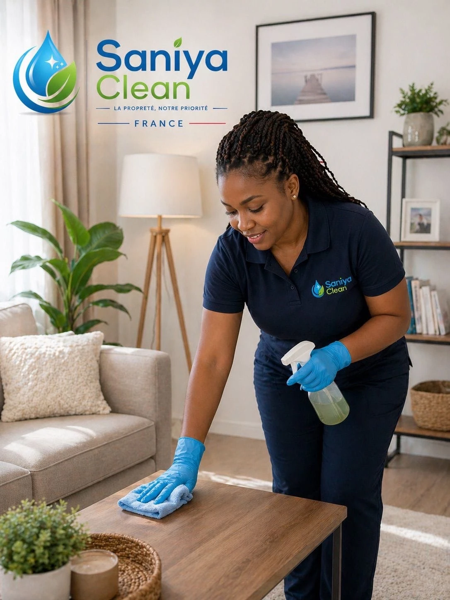
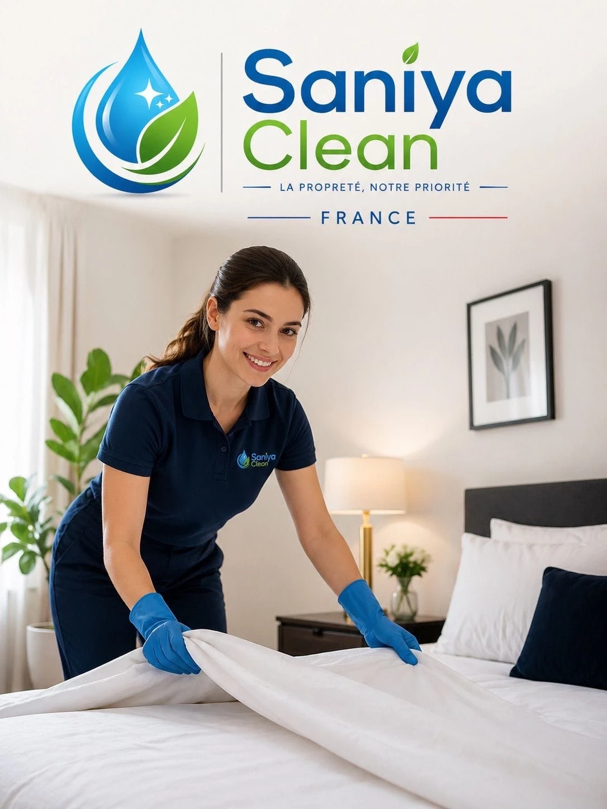

Maisons & appartements
Un entretien régulier ou ponctuel, pensé pour votre intérieur, vos habitudes et vos priorités.
Demander un devisSANÍYA CLEAN accompagne les particuliers et les professionnels à Échirolles, Grenoble et dans les alentours, avec une approche attentive, adaptée aux besoins de chaque lieu et aux attentes de ceux qui l'occupent.


Votre logement, votre activité, vos espaces partagés : une prestation pensée selon les lieux et vos besoins.
Un entretien régulier ou ponctuel, pensé pour votre intérieur, vos habitudes et vos priorités.
Demander un devisDes espaces de travail entretenus avec attention, dans le respect de votre organisation.
Demander un devisUn lieu accueillant pour vos clients et vos équipes, avec une attention portée aux zones de passage.
Demander un devisUne remise en propreté entre deux séjours, selon les besoins du logement et les consignes convenues.
Demander un devisL’entretien des espaces partagés, des entrées et des circulations, adapté à chaque immeuble.
Demander un devisUn nettoyage après travaux pour préparer les lieux à leur prochaine utilisation, selon leur état et vos besoins.
Demander un devisUn espace propre ne se résume pas à ce que l'on voit. C'est aussi un lieu dans lequel on se sent bien, où l'on peut vivre, travailler, accueillir ses proches ou développer son activité dans un environnement agréable.
C'est dans cet esprit que SANÍYA CLEAN souhaite accompagner les particuliers et les professionnels à Échirolles, à Grenoble et dans les alentours, en proposant un nettoyage attentif, adapté aux lieux et surtout aux personnes qui les occupent.
Chaque client a ses habitudes, ses priorités et ses attentes. Certains souhaitent un entretien régulier pour alléger leur quotidien. D'autres ont besoin d'une intervention ponctuelle, d'un nettoyage plus approfondi ou d'une attention particulière dans certaines pièces ou certaines zones.
Chez SANÍYA CLEAN, nous souhaitons prendre le temps de comprendre chaque demande afin de proposer une prestation cohérente avec les besoins exprimés, les caractéristiques du lieu et les consignes communiquées.
Notre approche repose sur l'écoute, le respect, le soin apporté au travail et la volonté de construire une relation de confiance avec chaque client.
Chez SANÍYA CLEAN, nous considérons que tous les espaces ne doivent pas nécessairement être nettoyés de la même manière. Chaque lieu a ses particularités, chaque personne a ses habitudes et chaque demande mérite d'être écoutée.
C'est pourquoi nous prenons le temps d'échanger avec vous sur vos besoins, vos priorités, les zones à traiter, les consignes particulières et les points auxquels vous accordez le plus d'importance.
Vous souhaitez insister sur la cuisine, accorder une attention particulière à une salle de bains, entretenir régulièrement votre logement ou préparer un espace avant l'arrivée de nouveaux occupants ? Votre demande constitue le point de départ de notre organisation.
Notre objectif est de vous proposer une prestation adaptée, avec des attentes clairement définies et une communication simple avant l'intervention.
Vos besoins, vos habitudes, vos priorités.
Les zones, les attentes et les consignes.
Une intervention adaptée à votre espace.
SANÍYA CLEAN souhaite inscrire son développement dans une démarche attentive au bien-être des personnes et à la qualité des espaces dans lesquels elles vivent et travaillent.
Un intérieur entretenu contribue au confort du quotidien, à une sensation de bien-être et à un environnement plus agréable. Dans un logement, un bureau, un commerce ou un espace partagé, les besoins ne sont pas toujours les mêmes. Notre approche consiste à en tenir compte pour organiser une intervention adaptée.
Nous accordons également de l'importance au choix et à l'utilisation appropriée des produits et du matériel de nettoyage. Lorsque cela est possible et pertinent, nous souhaitons privilégier des pratiques raisonnables, en tenant compte de la nature des surfaces, des consignes de sécurité et des besoins du lieu.
Notre démarche repose sur une idée simple : prendre soin des espaces, c'est aussi faire attention aux personnes qui les utilisent chaque jour.
Une démarche d’attention, sans revendication de label ni de certification environnementale.
Des mots qui donnent du sens à notre engagement.
SANÍYA CLEAN est une très bonne entreprise qui respecte les demandes du client et réalise le travail attendu. Les tarifs sont très abordables et j'ai beaucoup apprécié travailler avec cette entreprise.
C'est un très bon début ! La jeune femme qui est venue nettoyer chez moi était très respectueuse, souriante et consciencieuse. Elle a très bien réalisé son travail. Je suis satisfaite de cette expérience et je compte faire de nouveau appel à SANÍYA CLEAN.
J'ai travaillé avec SANÍYA CLEAN pendant trois jours et l'expérience a été incroyable. Je suis très satisfait de la prestation et j'ai hâte de pouvoir renouveler cette collaboration.
Témoignages fournis et reformulés. Accord des personnes concernées à obtenir avant toute publication réelle. Aucune note ni photo de client n’est affichée.
Parlons de votre lieu et de vos besoins. Les modalités d’intervention sont à préciser ensemble.
Décrivez-nous votre projetQuelques informations pour poser les bases d’une prestation adaptée à vos attentes.
Aucune demande n’est envoyée ou enregistrée. Aucun prix n’est calculé. N’entrez pas de données personnelles réelles dans cette maquette.
Les coordonnées officielles seront ajoutées avant la mise en ligne du site.
Zone présentée : Échirolles, Grenoble et alentours.